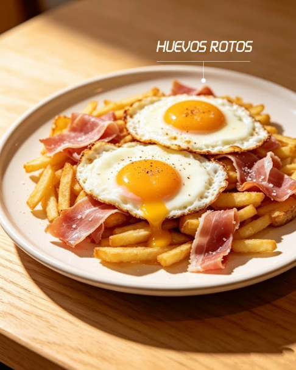
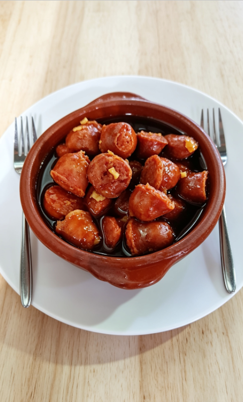

Sobre
Nosotros
Nuestra Historia
Fundado con la ilusión de crear un espacio único, nuestro bar/cafetería nació como un punto de encuentro para los amantes del buen café y las charlas interminables. Cada rincón está pensado para que te sientas como en casa, fusionando tradición y un ambiente moderno.
Desde nuestros inicios, nos hemos esforzado por seleccionar los mejores ingredientes locales, ofrecer un servicio cercano y mantener esa esencia que nos hace diferentes. ¡Gracias por formar parte de nuestro viaje diario!

Nuestra Filosofía
Creemos firmemente que la gastronomía une a las personas. Por eso, nuestro equipo trabaja incansablemente para ofrecer platos elaborados con pasión, uniendo sabores de siempre con presentaciones contemporáneas.
Para nosotros, cada cliente es único. Nos encanta ver cómo este espacio se llena de vida, risas y momentos compartidos alrededor de una buena mesa.
